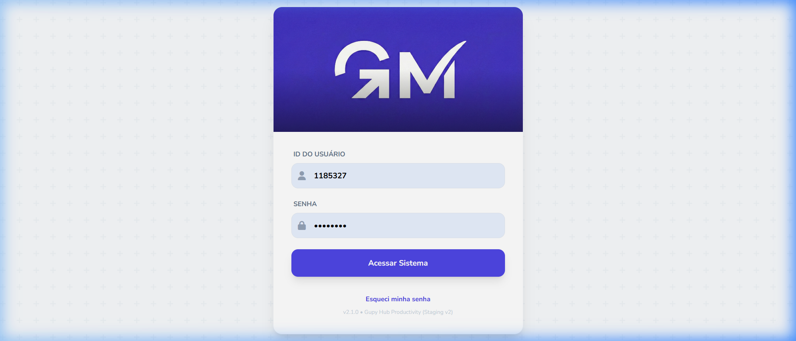
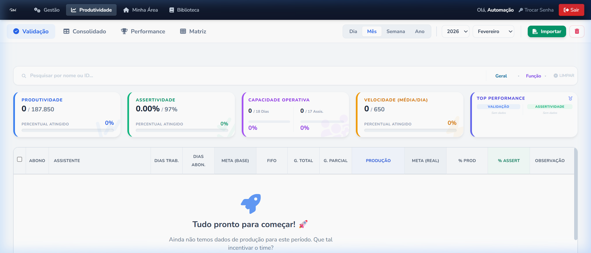
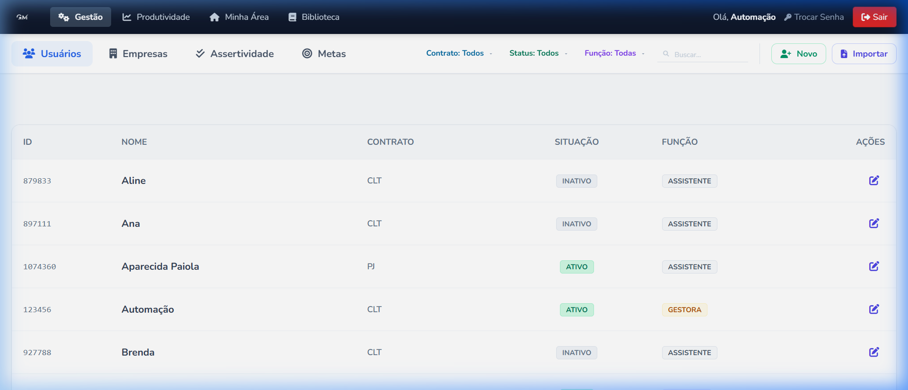
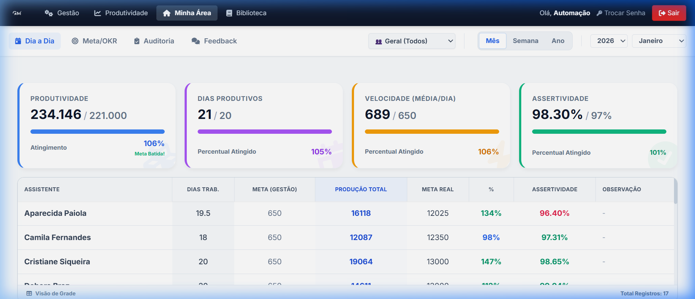
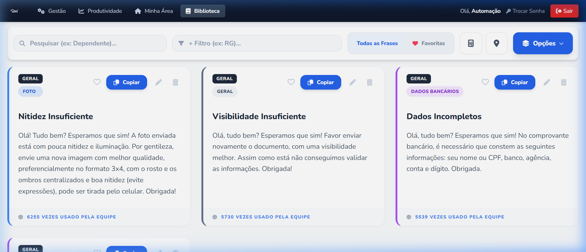
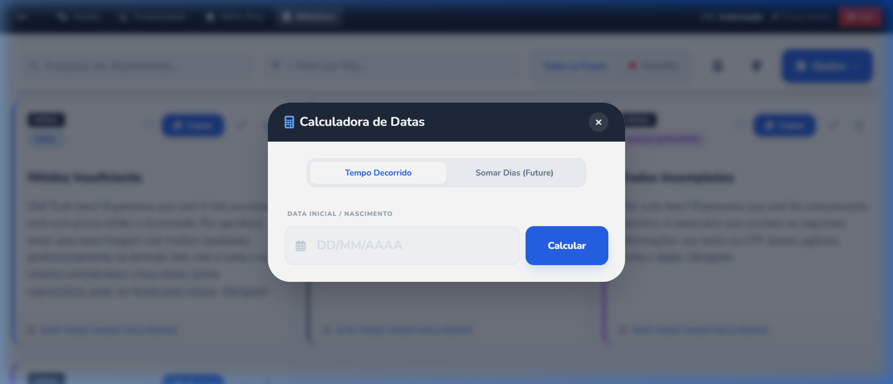
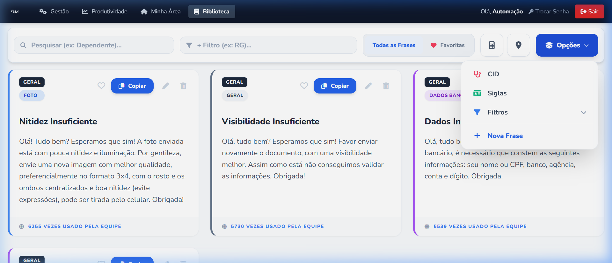

Manual: Introdução
Manual do Usuário GupyMesa v2.1.0Bem-vindo ao GupyMesa
O GupyMesa é o coração operacional e estratégico da nossa equipe. Ele não é apenas um sistema de registros, mas sim uma plataforma inteligente desenvolvida exclusivamente para monitorar, apoiar e evoluir o seu trabalho no dia a dia.
Aqui, cada validação de documento e cada meta alcançada é refletida em tempo real. O sistema foi construído com a premissa da total transparência: você sempre saberá exatamente onde está, o que precisa fazer e como o seu esforço contribui para o grande objetivo da empresa.

O que faz do GupyMesa uma ferramenta única?
Métricas em Tempo Real
Ao contrário de planilhas estáticas, o GupyMesa processa milhares de linhas instantaneamente. Quando a gestão importa novos dados, o seu painel se atualiza em milissegundos, mostrando seu atingimento real.
Privacidade e Governança
Seus dados são seus. A "Minha Área" blinda as suas informações, garantindo que o seu desempenho individual seja acessível apenas por você e pela sua liderança de forma segura e privada.
Qualidade Acima do Volume
O módulo de Auditoria não permite que a pressa comprometa a excelência. O sistema monitora a Assertividade, garantindo que o acerto no primeiro envio (First Time Right) seja nosso maior indicador.
Um Ecossistema de Apoio
Com calculadoras de prazo automáticas, preenchimento inteligente de CEPs e uma biblioteca com milhares de frases, o GupyMesa não apenas cobra a produção; ele lhe entrega as ferramentas para alcançá-la.
A Porta de Entrada: Segurança em Primeiro Lugar
O GupyMesa lida com o seu bem mais valioso: os seus dados de performance. Por isso, a tela de login não é apenas uma formalidade, é um escudo. Construímos um ecossistema blindado para garantir que absolutamente ninguém, além de você e da liderança autorizada, tenha acesso às suas métricas de produtividade e avaliações de qualidade.
O acesso é simples, direto, mas sustentado por regras estritas de segurança desde o seu primeiro dia na operação.

Protocolos de Acesso e Privacidade
Sua Matrícula, Sua Chave
Chega de e-mails corporativos longos ou usuários confusos. O seu login padrão é sempre o seu Número de Registro (ID). Direto ao ponto para você entrar rapidamente no sistema e focar no que importa.
Garantia do 1º Acesso
No seu primeiro acesso, a senha será provisória (seu próprio ID). Imediatamente, o sistema forçará você a criar uma Senha Privada, garantindo que ninguém do treinamento ou RH tenha a sua senha definitiva.
Recuperação Ágil
Esqueceu a senha? Não se preocupe. Diferente de sistemas burocráticos onde você espera 24 horas por um link no e-mail, no GupyMesa qualquer líder ou administrador pode dar um "Reset" na sua senha em 3 segundos.
Critérios Simples e Rápidos
Nós valorizamos a segurança sem atrapalhar a rotina. Exigimos apenas 6 caracteres para a troca de senha. Recomendamos não utilizar datas de nascimento ou sequências como '123456' para proteger a sua Minha Área.
Módulo Dinâmico de Validação
A aba "Validação" é a tela principal de acompanhamento da ferramenta. Aqui, a equipe visualiza os cards de desempenho macro no topo e os detalhes diários de toda a operação através de uma tabela filtrável gerada automaticamente.

Painel de Filtros e Busca
Localizado no menu de cima. Quer saber o resultado do "Mês"? O sistema soma toda a equipe do dia 01 ao dia atual. Se trocar para "Dia" e escolher 20 de Março, os cards se recalculam apenas para aquela quarta-feira.
Sua equipe cresceu? Basta digitar parte do nome ou código de matrícula. A tabela esconderá todos os outros assistentes e deixará só a sua pesquisa em tela para auditoria rápida.
O filtro "Geral" permite dividir por tipo de vínculo, como CLT ou terceirizados. O de "Função" permite segmentar as planilhas entre Assistentes e Lideranças ativas.
Controles de Dados
A mágica acontece aqui. A gestão recebe a base bruta do sistema central, aperta "Importar" e seleciona o documento CSV. Em instantes o GupyMesa lê os dados, calcula os cruzamentos de metas reais, abonos e já disponibiliza os resultados em tela.
O ícone de lixeira (apenas para perfis de liderança/gestão) serve para limpar os dados do período que você está visualizando na tela. Utilizado quando há erro na planilha grossa e um reparo precisa ser feito de fábrica.
Gestão de Usuários (Controle de Acessos)
O painel central de Pessoas. Aqui o gestor define quem tem acesso à plataforma, qual é o nível de permissão (Assistente, Gestão, Auditoria) e a que time cada pessoa pertence.

Ferramentas da Tela
No cabeçalho você pode cruzar os filtros: Mostrar todos os de "Contrato Terc", que estão "Ativos" e são "Assistentes". A barra de busca acha imediatamente qualquer pessoa pelo ID ou Nome.
Sua equipe tem 50 pessoas novas? O GupyMesa possui o botão azul Importar no topo direito. Suba um CSV e a inteligência cadastrará todo mundo automaticamente.
A Minha Área é a principal aba dedicada a você. É o seu diário de bordo confidencial e a forma principal para saber: "Estou indo bem?".
O Seu Diário de Bordo (Dia a Dia)
Aqui ficam agrupados de forma instantânea tudo que você validou. O objetivo dessa tela é responder se o seu ritmo de hoje garantirá que você bata a meta no final do mês.

Coração da Operação (KPIs Analisados)
Sabe a barra "Produtividade"? Olhe de perto o texto Faltam: X ao lado da porcentagem. O GupyMesa calcula em tempo real o quanto da "tração" exata do seu contrato (CLT/Terc) necessita por dia para terminar a corrida no verde, já subtraindo seus feriados e folgas!
Não importa se no Dia 1 você fez mil, e no Dia 2 você não fez nada. O Card Amarelo calcula a média limpa, te mostrando sua "Marcha". Se a média cair, o card te avisa visualmente.
Todo o trabalho perfeito gera o número verde. Se a auditoria lançar NOK na sua Gestão, este percentual é corroído instantes depois. Seu desafio é fechar o trimestre em 100% de qualidade.
No cabeçalho, os botões Mês, Semana e Ano alteram magicamente o dashboard inteiro de uma vez, sem carregar telas chatas. Ele apenas recalcula "a quente" seus resultados daquele trimestre ou semana atual.
Aceleradores de Rotina (A Biblioteca)
Imagine essa aba como o seu "Canivete Suíço" corporativo. Toda regra nova, texto padrão de atendimento, ou ferramenta (que antes você pesquisava no Google) estão 100% integrados dentro desta mesma tela.

Navegação de Alta Velocidade
Por que duas? Para cruzamento tático! A barra superior busca palavras soltas no nome do atalho (Ex: Cônjuge). A segunda barra filtra detalhes internos ou "tags" da frase (Ex: Certidão). É impossível não achar a regra correta em décimos de segundo.
Sempre visível para comprovar a robustez do banco de dados, mostrando exato o arsenal de frases e procedimentos cadastrados que você pode usufruir para não ter que digitar do zero.
Sua visão global. Mostra todo o catálogo cadastrado pela Liderança.
Seu espaço VIP. Tem 3 frases que você usa o dia inteiro? Clique no "coração" nelas. Clicando nesta aba especial, o sistema oculta a poluição de toda a rede e deixa APENAS as suas, a um clique do copiar-e-colar.
Integrações Automáticas Sem Sair da Tela
Pare de esmagar o `Alt + Tab`. O GupyMesa traz apps externos cruciais no cabeçalho. Veja como funcionam:

Calculadora de Tempos Mágica
Recebeu um atestado de 123 dias retroativos? Ou um dependente faz 18 anos semana que vem? Clique no ícone superior, insira a data base e mande o sistema Adicionar ou Subtrair para descobrir o prazo limite exato sem calcular no papel.
Consulta de CEP Direta
Um comprovante de residência parece duvidoso? O ícone de Pin do mapinha te abre a viabilização de pesquisar o CEP do candidato na hora e ver se ao menos bate com a mesma Rua e Cidade apontadas no doc enviado.
Menu "Opções" (A Ferramenta da Gestão Operacional)

Ferramentas Clínicas e Macro Filtros
Chegou laudo novo pra cadastrar no eSocial? Nós injetamos o CID-10 e 11 inteiro aqui. Digite "F32" e em frações de segundo saiba que se trata do Código Médico específico dentro do modal instantâneo.
Cansado de pesquisar DPT, SSP, DETRAN de diferentes estados nos RGs? A tabela de órgãos emissores fica salva para consulta paralela rápida, padronizando os formulários da equipe.
Sua base tem 5 mil frases? Abra a opção filtros no menu para buscar as regras focadas estritamente em um campo, por exemplo "Só Frases de Certidão de Nascimento", ou restritas a "Tal Empregador".
Se o seu perfil for de Gestão ou curadoria de conhecimento, você acessa este painel invisível para os assistentes para popular a base de Conhecimento com as Novas Regras aprovadas ontem!